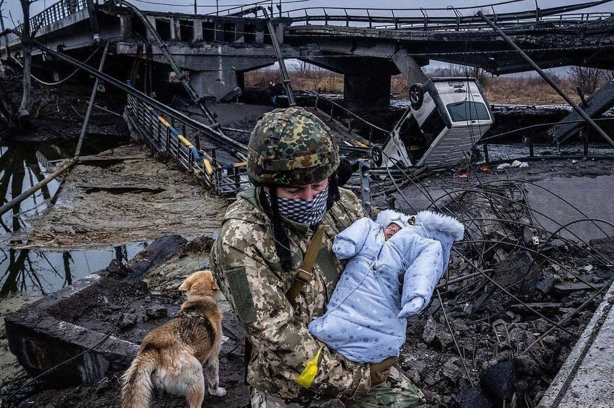
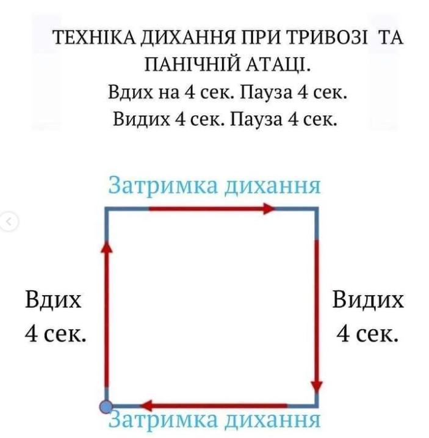

фото звідси
Грудне вигодовування у час війни або надзвичайної ситуації - це те, що може врятувати життя дитині. Купити суміш, знайти безпечну воду, організувати правильне розведення суміші, температурний режим, стерилізацію в надвичайних умовах може бути неможливо, тому грудне вигодовування варто берегти як зіницю ока.
Навіть якщо мама недоотримує їжі, молоко не зникне! Так, його може стати менше, але воно не зникне і не “перегорить”. Адже принцип лактації "попит породжує пропозицію" продовжує працювати при частих годуваннях та ефективному смоктанні!
Знаю, що більшість із нас зараз у стані паніки чи розгубленості, тому, перш за все, слід заспокоїтися. Для цього глибоко дихаємо по схемі, як на наступному малюнку.

Пам'ятаємо, що при стресі молоко не зникає. Так, воно може важче витікати з грудей, бо гормони стресу (адреналін і кортизол) блокують вироблення окситоцину. Для зменшення дії цих гормонів стресу по максимуму пробуємо розслабитися:
- Вдих. Видих.
- Випити теплого.
- Одягатися тепло, щоб не трясло від паніки.
- З'їсти смачненького.
І годувати, годувати, годувати. На вимогу дитини і пропонувати самій. Гніздуватися, застосовуючи контакт шкіра-до-шкіри, якщо є така можливість. Можна зціджувати грудне молоко додатково між годуваннями, щоб збільшити його кількість, якщо вам так буде спокійніше.
Чи достатньо дитині молока? Це питання часто турбує матусь, особливо коли щось, до чого ви звикли, раптово змінюється. Наприклад, “порожні груди” чи неспокійна поведінка дитини.
Відчуття порожніх грудей оманливе і не свідчить про те, що мало молока. Грудне молоко виробляється під час смоктання дитини.
Малеча може бути неспокійна, адже відчуває ваш стрес, але це також не означає, що дитині мало молока. Чи достатньо дитині молока визначають по набору ваги та кількості сечовипускань за добу (як їх порахувати - тут), а не по поведінці дитини.
Проговорюйте дитині будь-якого віку "мамі боляче/страшно/засмучена, але мама поряд, вона тебе захистить". Застосовуйте ігри та буденну рутину (по можливості).
Для того, щоб мінімізувати ризик виникнення лактостазу (“застою молока”):
- Не забувайте про годування малечі
- Старайтеся не перетискати груди при носінні дитини на руках
- Не одягайте тісний одяг.
Якщо ж з вами трапилася така прикрість, допомогти собі можна так, як описано в цій статті.